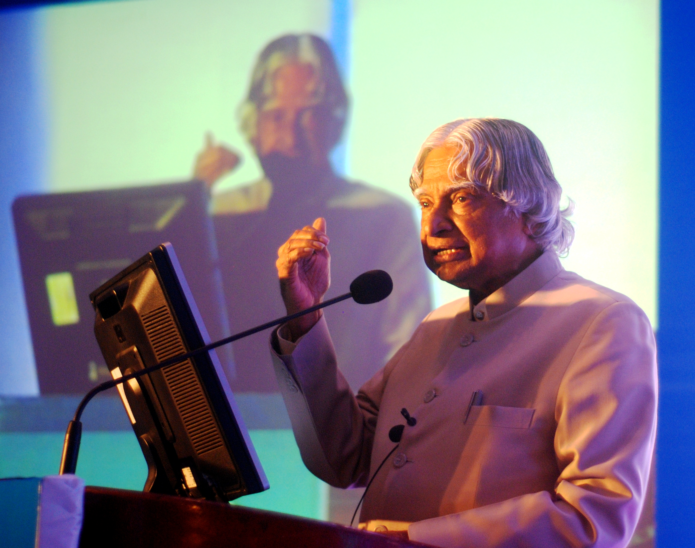

A TRIBUTE TO A GREAT VISIONARY
The Missile Man of India | The People's President
Scientist. Teacher. Author. President. A visionary who inspired generations to dream bigger.
Explore His Journey ↓WHO HE WAS

Dr. A. P. J. Abdul Kalam was one of India's most respected scientists, educators, and public figures.
Born on 15 October 1931 in Rameswaram, Tamil Nadu, he grew up in a humble family and developed a strong interest in science, education, and learning.
His scientific career played an important role in India's space and defence programmes. He contributed to major aerospace and missile development initiatives and became widely known as the "Missile Man of India."
In 2002, Dr. Kalam became the 11th President of India. His simple personality, dedication to education, and ability to connect with young people made him especially admired by students across the country.
Even after his presidency, he continued working as a teacher, author, and inspirational speaker. His life demonstrated how knowledge, discipline, determination, and dreams can contribute to the progress of a nation.
WORDS THAT INSPIRE
Dream, dream, dream. Dreams transform into thoughts and thoughts result in action.
HIS CONTRIBUTIONS
Contributed to India's space research and satellite launch vehicle development.
Played a significant role in India's integrated missile development programmes.
Served as the 11th President of India from 2002 to 2007.
Inspired millions of students to pursue knowledge, innovation, and national development.
HIS JOURNEY
Born on 15 October 1931 in Rameswaram, Tamil Nadu.
Began his professional journey in India's aerospace and defence research programmes.
The SLV-III successfully placed the Rohini satellite into near-earth orbit.
Received India's highest civilian honour, the Bharat Ratna.
Became the 11th President of India.
Passed away on 27 July 2015 while delivering a lecture at IIM Shillong.
HIS LEGACY
Dr. Kalam's greatest legacy is not limited to his scientific achievements or his position as President.
His greatest contribution was his ability to inspire young people to believe in themselves and work towards a better future.
His story continues to remind us that humble beginnings do not define the limits of our dreams. Through education, hard work, courage, and vision, he showed that one individual can inspire an entire generation.
His dreams continue through the generations he inspired.